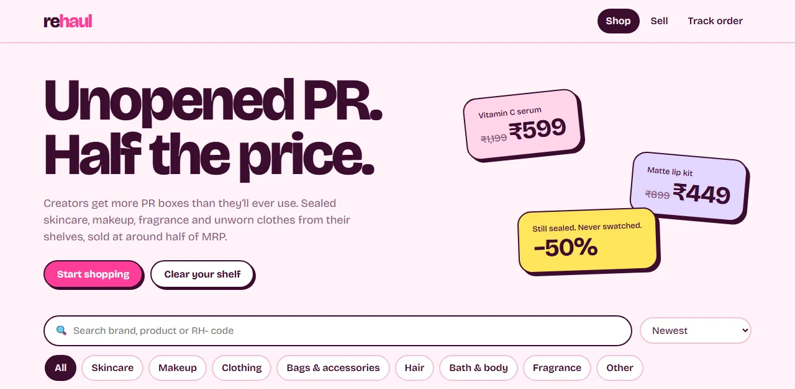

Rehaul
A resale shop for unopened PR products, where the database is the backend.
Creators get far more PR boxes than they can use. Rehaul lists those products at about half of MRP, keeps the seller anonymous, and handles payment by UPI and WhatsApp. I built the shop, the admin panel and the operations around it, and it runs on free tiers.
There is no application server. Every rule that has to be trusted lives inside Postgres, so it holds whether a change comes from the admin panel, the SQL editor or a script I haven't written yet:
- requested
- reserved
- paid
- shipped
- delivered
cancelled is reachable from any state before delivered. Skips such as requested → shipped are rejected by a trigger.
- No double selling. A partial unique index allows one active order per listing, and the listing row is locked
FOR UPDATEwhile an order is created. - Locked-down by default. RLS on every table. The public key can read two views and call four functions, each with validation and per-IP rate limits. Seller names, phones and UPI IDs never leave the database.
- History doesn't move. Fee % and shipping are snapshotted on each order, so changing settings later never rewrites old payouts.
- Reporting built in. Six analytics views (KPIs, category performance, discount bands, repeat buyers, daily orders, seller balances) feed the admin dashboard.
- Operations. CI runs 25 unit tests and 49 pgTAP database tests before every deploy. A weekly workflow takes an encrypted backup. A Cloudflare function generates per-product link previews for Instagram and WhatsApp.
